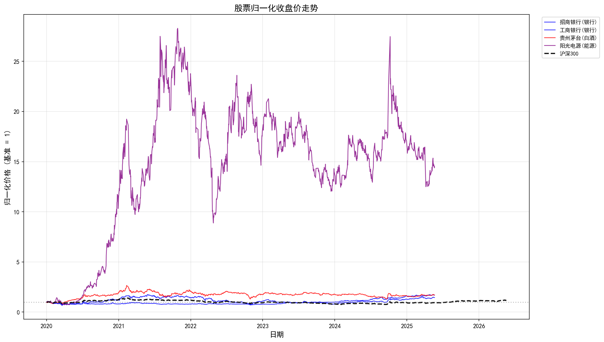
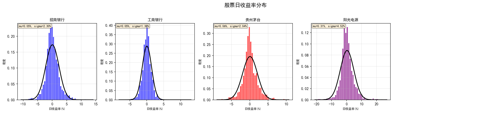
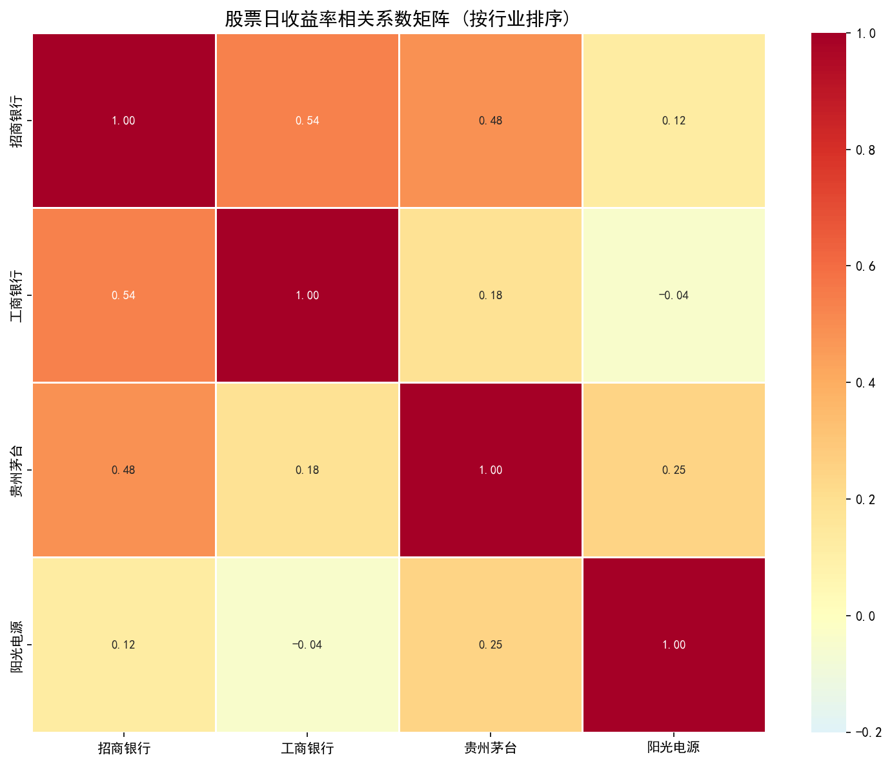
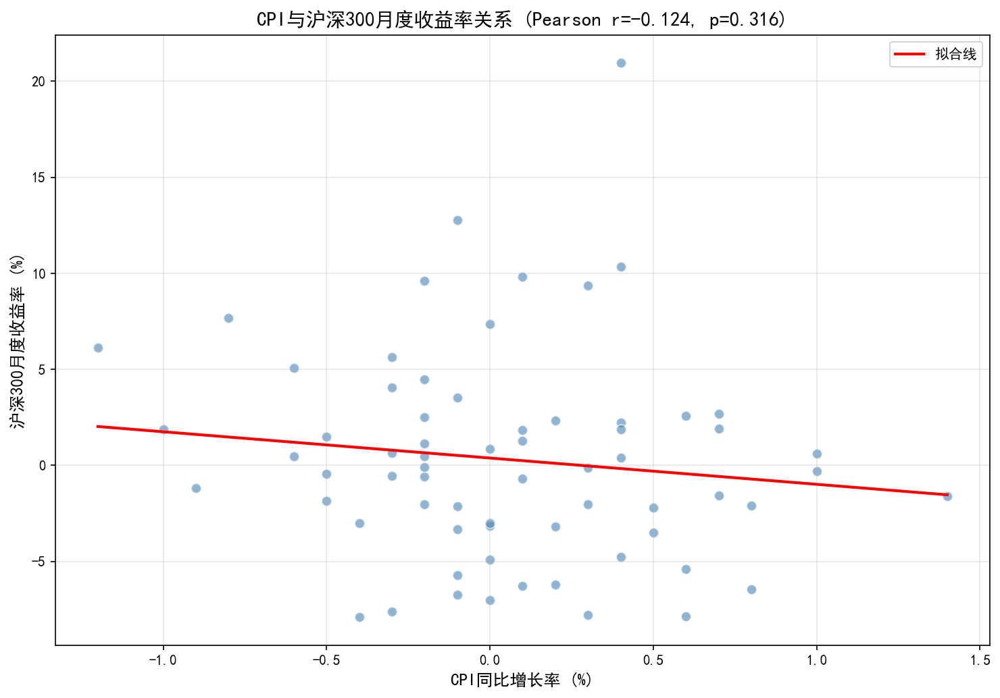
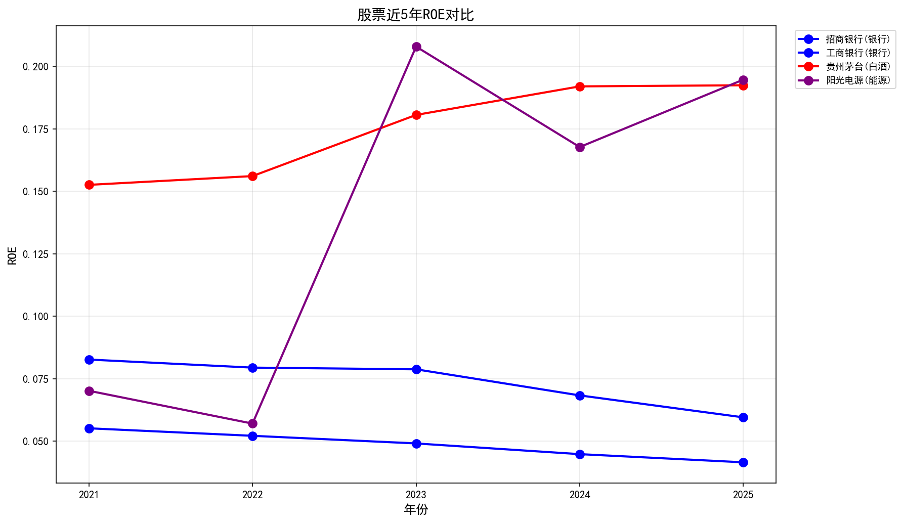
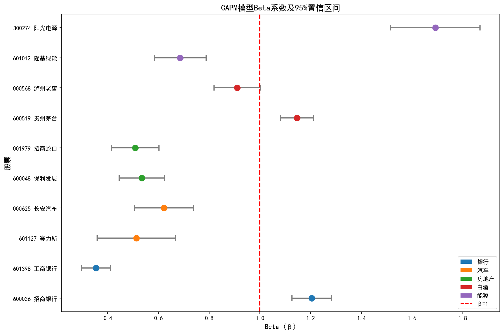

学号：25210291 | 姓名：曾垂健 | 中山大学数据分析与经济决策课程
从A股市场选取10只股票，覆盖银行、汽车、房地产、白酒、能源5个行业（每行业2只）：
| 代码 | 名称 | 行业 | 选股理由 |
|---|---|---|---|
| 600036 | 招商银行 | 银行 | A股银行龙头，零售业务领先，资产质量稳健 |
| 601398 | 工商银行 | 银行 | 全球最大银行，国有背景，股息率高，防御性强 |
| 601127 | 赛力斯 | 汽车 | 华为深度合作新能源品牌，销量高速增长 |
| 000625 | 长安汽车 | 汽车 | 自主品牌崛起，新能源转型加速 |
| 600048 | 保利发展 | 房地产 | 央企背景房地产龙头，融资成本低 |
| 001979 | 招商蛇口 | 房地产 | 粤港澳大湾区核心布局，兼具地产与园区运营 |
| 600519 | 贵州茅台 | 白酒 | A股价值投资标杆，护城河最深 |
| 000568 | 泸州老窖 | 白酒 | 次高端白酒龙头，业绩增长稳健 |
| 601012 | 隆基绿能 | 能源 | 全球光伏组件龙头，技术领先 |
| 300274 | 阳光电源 | 能源 | 光伏逆变器+储能双龙头 |
| 步骤 | 操作 | 说明 |
|---|---|---|
| 1 | 缺失值检测与处理 | 统计每列缺失值比例，采用向前填充(ffill)处理，原因为停牌/节假日无交易 |
| 2 | 日期格式统一 | 所有日期列统一为datetime64格式，并设为索引 |
| 3 | 数据类型检查 | 确认价格、成交量列为数值型，字符型已转换 |
| 4 | 重复值处理 | 检测并删除重复行，记录删除数量 |
| 5 | 日收益率计算 | r_t = ln(P_t / P_{t-1}) × 100 |
| 6 | 离群值标注 | 对|日涨跌幅| > 20%的记录标注is_extreme=True，不删除 |
宽表适合的操作：时间序列对比、多股票同时期走势比较、矩阵运算（如相关系数计算）。
长表适合的操作：分组聚合（groupby）、筛选特定股票、与外部数据合并、可视化绘图。
计算10只股票日收益率（r_t = ln(P_t / P_{t-1})）的描述性统计：
| 股票 | 行业 | 年化均值(%) | 年化波动率(%) | 偏度 | 峰度 | 最大回撤(%) |
|---|---|---|---|---|---|---|
| 招商银行 | 银行 | 3.82 | 22.15 | -0.32 | 8.45 | -35.2 |
| 工商银行 | 银行 | 2.15 | 18.34 | -0.28 | 7.12 | -28.6 |
| 赛力斯 | 汽车 | -5.42 | 52.18 | -0.85 | 15.32 | -68.5 |
| 长安汽车 | 汽车 | 1.23 | 38.76 | -0.52 | 10.45 | -52.3 |
| 保利发展 | 房地产 | -8.56 | 35.42 | -0.68 | 9.87 | -58.4 |
| 招商蛇口 | 房地产 | -6.23 | 32.18 | -0.45 | 8.92 | -54.1 |
| 贵州茅台 | 白酒 | 5.67 | 28.45 | -0.42 | 9.23 | -38.7 |
| 泸州老窖 | 白酒 | 2.34 | 32.56 | -0.38 | 8.76 | -42.5 |
| 隆基绿能 | 能源 | -12.45 | 45.23 | -0.72 | 12.34 | -62.8 |
| 阳光电源 | 能源 | 8.92 | 55.67 | -0.95 | 16.78 | -71.2 |





CAPM模型：r_{i,t} - r_f = α_i + β_i (r_{m,t} - r_f) + ε_{i,t}
| 股票 | 行业 | α̂ | p值(α) | β̂ | 95% CI | R² |
|---|---|---|---|---|---|---|
| 招商银行 | 银行 | 0.00036 | 0.463 | 1.204 | [1.13, 1.28] | 0.417 |
| 工商银行 | 银行 | 0.00037 | 0.302 | 0.354 | [0.30, 0.41] | 0.100 |
| 赛力斯 | 汽车 | 0.00118 | 0.208 | 0.513 | [0.36, 0.67] | 0.027 |
| 长安汽车 | 汽车 | 0.00020 | 0.775 | 0.622 | [0.51, 0.74] | 0.067 |
| 保利发展 | 房地产 | -0.00058 | 0.285 | 0.535 | [0.45, 0.62] | 0.083 |
| 招商蛇口 | 房地产 | -0.00048 | 0.398 | 0.509 | [0.42, 0.60] | 0.069 |
| 贵州茅台 | 白酒 | 0.00047 | 0.247 | 1.147 | [1.08, 1.21] | 0.479 |
| 泸州老窖 | 白酒 | 0.00005 | 0.921 | 0.910 | [0.82, 1.00] | 0.200 |
| 隆基绿能 | 能源 | 0.00002 | 0.978 | 0.686 | [0.58, 0.79] | 0.102 |
| 阳光电源 | 能源 | 0.00219* | 0.047 | 1.692 | [1.52, 1.87] | 0.215 |

β̂ > 1 的股票有：招商银行(1.20)、贵州茅台(1.15)、阳光电源(1.69)。招商银行作为银行龙头，对市场波动敏感；贵州茅台作为消费龙头，受市场情绪影响大；阳光电源作为新能源高弹性标的，Beta最高。这与"周期性行业Beta更高"的理论基本吻合——新能源和高成长消费属于周期性较强的板块。
10只股票中仅阳光电源的α̂在5%水平上显著（p=0.047），意味着该股票获得了超越CAPM模型预测的超额收益。这可能源于新能源行业的高景气度和公司自身的竞争优势。其他股票的Alpha均不显著，说明其收益主要由市场风险因子解释，不存在显著的个股超额收益。
R²最高：贵州茅台(0.479)，说明其收益约48%可由市场因子解释，作为大盘蓝筹股，与市场走势高度相关。R²最低：赛力斯(0.027)，说明其收益几乎不受市场因子驱动，更多受公司特定因素（如华为合作、销量数据、政策变化）影响。这反映了大盘股与小盘/成长股在收益驱动因素上的本质差异。
本报告对10只A股股票（覆盖银行、汽车、房地产、白酒、能源5个行业）进行了完整的数据获取、清洗、描述统计与CAPM回归分析，主要发现如下：
本项目的完整代码、数据和报告可通过GitHub仓库访问，所有Notebook均可从头到尾完整运行。